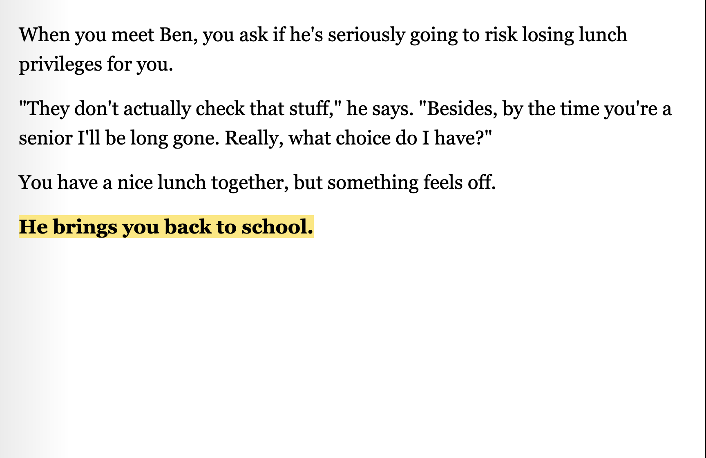

that's a shame.
Navigate as high schooler Jude in this short interactive fiction game.
narrative design
This game was loosely based on my high school experience. It was made in Twine and stylized with CSS.

<a href="https://bombylls.itch.io/thats-a-shame">Play That's a shame. on itch.io</a>